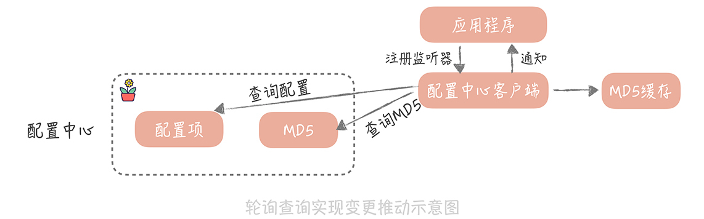

- 00 开篇词 为什么你要学习高并发系统设计？.md.html
- 01 高并发系统：它的通用设计方法是什么？.md.html
- 02 架构分层：我们为什么一定要这么做？.md.html
- 03 系统设计目标（一）：如何提升系统性能？.md.html
- 04 系统设计目标（二）：系统怎样做到高可用？.md.html
- 05 系统设计目标（三）：如何让系统易于扩展？.md.html
- 06 面试现场第一期：当问到组件实现原理时，面试官是在刁难你吗？.md.html
- 07 池化技术：如何减少频繁创建数据库连接的性能损耗？.md.html
- 08 数据库优化方案（一）：查询请求增加时，如何做主从分离？.md.html
- 09 数据库优化方案（二）：写入数据量增加时，如何实现分库分表？.md.html
- 10 发号器：如何保证分库分表后ID的全局唯一性？.md.html
- 11 NoSQL：在高并发场景下，数据库和NoSQL如何做到互补？.md.html
- 12 缓存：数据库成为瓶颈后，动态数据的查询要如何加速？.md.html
- 13 缓存的使用姿势（一）：如何选择缓存的读写策略？.md.html
- 14 缓存的使用姿势（二）：缓存如何做到高可用？.md.html
- 15 缓存的使用姿势（三）：缓存穿透了怎么办？.md.html
- 16 CDN：静态资源如何加速？.md.html
- 17 消息队列：秒杀时如何处理每秒上万次的下单请求？.md.html
- 18 消息投递：如何保证消息仅仅被消费一次？.md.html
- 19 消息队列：如何降低消息队列系统中消息的延迟？.md.html
- 20 面试现场第二期：当问到项目经历时，面试官究竟想要了解什么？.md.html
- 21 系统架构：每秒1万次请求的系统要做服务化拆分吗？.md.html
- 22 微服务架构：微服务化后，系统架构要如何改造？.md.html
- 23 RPC框架：10万QPS下如何实现毫秒级的服务调用？.md.html
- 24 注册中心：分布式系统如何寻址？.md.html
- 25 分布式Trace：横跨几十个分布式组件的慢请求要如何排查？.md.html
- 26 负载均衡：怎样提升系统的横向扩展能力？.md.html
- 27 API网关：系统的门面要如何做呢？.md.html
- 28 多机房部署：跨地域的分布式系统如何做？.md.html
- 29 Service Mesh：如何屏蔽服务化系统的服务治理细节？.md.html
- 30 给系统加上眼睛：服务端监控要怎么做？.md.html
- 31 应用性能管理：用户的使用体验应该如何监控？.md.html
- 32 压力测试：怎样设计全链路压力测试平台？.md.html
- 33 配置管理：成千上万的配置项要如何管理？.md.html
- 34 降级熔断：如何屏蔽非核心系统故障的影响？.md.html
- 35 流量控制：高并发系统中我们如何操纵流量？.md.html
- 36 面试现场第三期：你要如何准备一场技术面试呢？.md.html
- 37 计数系统设计（一）：面对海量数据的计数器要如何做？.md.html
- 38 计数系统设计（二）：50万QPS下如何设计未读数系统？.md.html
- 39 信息流设计（一）：通用信息流系统的推模式要如何做？.md.html
- 40 信息流设计（二）：通用信息流系统的拉模式要如何做？.md.html
- 加餐 数据的迁移应该如何做？.md.html
- 期中测试 10道高并发系统设计题目自测.md.html
- 用户故事 从“心”出发，我还有无数个可能.md.html
- 结束语 学不可以已.md.html
- 捐赠
33 配置管理：成千上万的配置项要如何管理？
你好，我是唐扬。
相信在实际工作中，提及性能优化你会想到代码优化，但是实际上有些性能优化可能只需要调整一些配置参数就可以搞定了，为什么这么说呢？我给你举几个例子：
你可以调整配置的超时时间，让请求快速失败，防止系统的雪崩，提升系统的可用性；
你还可以调整 HTTP 客户端连接池的大小，来提升调用第三方 HTTP 服务的并行处理能力，从而提升系统的性能。
你可以认为，配置是管理你系统的工具，在你的垂直电商系统中，一定会有非常多的配置项，比如数据库的地址、请求 HTTP 服务的域名、本地内存最大缓存数量等等。
那么，你要如何对这些配置项做管理呢？管理的过程中要注意哪些事情呢？
如何对配置进行管理呢？
配置管理由来已久，比如在 Linux 系统中就提供了大量的配置项，你可以依据自身业务的实际情况，动态地对系统功能做调整。比如，你可以修改 dirty_writeback_centisecs 参数的数值，就可以调整 Page Cache 中脏数据刷新到磁盘上的频率；你也可以通过修改 tcp_max_syn_backlog 参数置的值，来调整未建立连接队列的长度。修改这些参数既可以通过修改配置文件并且重启服务器来配置生效，也可以通过 sysctl 命令来动态地调整，让配置即时生效。
那么你在开发应用的时候，都有哪些管理配置的方式呢？主要有两种：
一种是通过配置文件来管理；
另一种是使用配置中心来管理。
以电商系统为例，你和你的团队在刚开始研发垂直电商系统时，为了加快产品的研发速度，大概率不会注意配置管理的问题，会自然而然地把配置项和代码写在一起。但是随着配置项越来越多，为了更好地对配置项进行管理，同时避免修改配置项后还要对代码做重新的编译，你选择把配置项独立成单独的文件（文件可以是 properties 格式、xml 格式或 yaml 格式）。不过，这些文件还是会和工程一起打包部署，只是更改配置后不需要对代码重新编译了。
随后，你很快发现了一个问题：虽然把配置拆分了出来，但是由于配置还是和代码打包在一起，如果要更改一个配置，还是需要重新打包，这样无疑会增加打包的时间。于是，你考虑把配置写到单独的目录中，这样，修改配置就不需要再重新打包了（不过，由于配置并不能够实时地生效，所以想让配置生效，还是需要重启服务）。
我们一般使用的基础组件，比如 Tomcat，Nginx，都是采用上面这种配置文件的方式来管理配置项的，而在 Linux 系统中，我提到的 tcp_max_syn_backlog 就可以配置在 /etc/sysctl.conf 中。
这里，我需要强调一点，我们通常会把配置文件存储的目录，标准化为特定的目录。比如，都配置成 /data/confs 目录，然后把配置项使用 Git 等代码仓库管理起来。这样，在增加新的机器时，在机器初始化脚本中，只需要创建这个目录，再从 Git 中拉取配置就可以了，是一个标准化的过程，这样可以避免在启动应用时忘记部署配置文件。
另外，如果你的服务是多机房部署的，那么不同机房的配置项中，有可能有相同的，或者有不同的。那么，你需要将相同的配置项放置在一个目录中给多个机房公用，再将不同的配置项，放置在以机房名为名称的目录中。在读取配置的时候应该优先读取机房的配置，再读取公共配置，这样可以减少配置文件中的配置项的数量。
我给你列了一个典型目录配置，如果你的系统也使用文件来管理配置，那么可以参考一下。
/data/confs/common/commerce // 电商业务的公共配置
/data/confs/commerce-zw // 电商业务兆维机房配置
/data/confs/commerce-yz // 电商业务亦庄机房配置
/data/confs/common/community // 社区业务的公共配置
/data/confs/community-zw // 社区业务兆维机房配置
/data/confs/community-yz // 社区业务亦庄机房配置
那么，这是不是配置管理的最终形态呢？当然不是，你不要忘了把配置放在文件中的方式还存在的问题（我上面也提到过了），那就是，我们必须将服务重启后，才能让配置生效。有没有一种方法可以在不重启应用的前提下，也能让配置生效呢？这就需要配置中心帮助我们实现了。
配置中心是如何实现的？
配置中心可以算是微服务架构中的一个标配组件了。业界也提供了多种开源方案供你选择，比较出名的有携程开源的 Apollo，百度开源的 Disconf，360 开源的 QConf，Spring Cloud 的组件 Spring Cloud Config 等等。
在我看来，Apollo 支持不同环境，不同集群的配置，有完善的管理功能，支持灰度发布、更改热发布等功能，在所有配置中心中功能比较齐全，推荐你使用。
那么，配置中心的组件在实现上，有哪些关键的点呢？如果你想对配置中心组件有更强地把控力，想要自行研发一套符合自己业务场景的组件，又要如何入手呢？
配置信息如何存储
其实，配置中心和注册中心非常类似，其核心的功能就是对于配置项的存储和读取。所以，在设计配置中心的服务端时，我们需要选择合适的存储组件，来存储大量的配置信息，这里可选择的组件有很多。
事实上，不同的开源配置中心也使用了不同的组件，比如 Disconf、Apollo 使用的是 MySQL；QConf 使用的是 ZooKeeper。我之前维护和使用的配置中心就会使用不同的存储组件，比如微博的配置中心使用 Redis 来存储信息，而美图的则使用 Etcd。
而无论使用哪一种存储组件，你所要做的就是规范配置项在其中的存储结构。比如，我之前使用的配置中心用 Etcd 作为存储组件，支持存储全局配置、机房配置和节点配置。其中，节点配置优先级高于机房配置，机房配置优先级高于全局配置。也就是说，我们会优先读取节点的配置，如果节点配置不存在，再读取机房配置，最后读取全局配置。它们的存储路径如下：
/confs/global/{env}/{project}/{service}/{version}/{module}/{key} // 全局配置
/confs/regions/{env}/{project}/{service}/{version}/{region}/{module}/{key} // 机房配置
/confs/nodes/{env}/{project}/{service}/{version}/{region}/{node}/{module}/{key} // 节点配置
变更推送如何实现
配置信息存储之后，我们需要考虑如何将配置的变更推送给服务端，这样就可以实现配置的动态变更，不需要重启服务器就能让配置生效了。而我们一般会有两种思路来实现变更推送：一种是轮询查询的方式；一种是长连推送的方式。
轮询查询很简单，就是应用程序向配置中心客户端注册一个监听器，配置中心的客户端，定期地（比如 1 分钟）查询所需要的配置是否有变化，如果有变化则通知触发监听器，让应用程序得到变更通知。
这里有一个需要注意的点，如果有很多应用服务器都去轮询拉取配置，由于返回的配置项可能会很大，那么配置中心服务的带宽就会成为瓶颈。为了解决这个问题，我们会给配置中心的每一个配置项，多存储一个根据配置项计算出来的 MD5 值。
配置项一旦变化，这个 MD5 值也会随之改变。配置中心客户端在获取到配置的同时，也会获取到配置的 MD5 值，并且存储起来。那么在轮询查询的时候，需要先确认存储的 MD5 值，和配置中心的 MD5 是不是一致的。如果不一致，这就说明配置中心中，存储的配置项有变化，然后才会从配置中心拉取最新的配置。
由于配置中心里存储的配置项变化的几率不大，所以使用这种方式后，每次轮询请求就只是返回一个 MD5 值，可以大大地减少配置中心服务器的带宽。

另一种长连的方式，则是在配置中心服务端保存每个连接关注的配置项列表。这样，当配置中心感知到配置变化后，就可以通过这个连接，把变更的配置推送给客户端。这种方式需要保持长连，也需要保存连接和配置的对应关系，实现上要比轮询的方式复杂一些，但是相比轮询方式来说，能够更加实时地获取配置变更的消息。
而在我看来，配置服务中存储的配置变更频率不高，所以对于实时性要求不高，但是期望实现上能够足够简单，所以如果选择自研配置中心的话，可以考虑使用轮询的方式。
如何保证配置中心高可用
除了变更通知以外，在配置中心实现中，另外一个比较关键的点在于如何保证它的可用性，因为对于配置中心来说，它的可用性的重要程度要远远大于性能。这是因为我们一般会在服务器启动时，从配置中心中获取配置，如果配置获取的性能不高，那么外在的表现也只是应用启动时间慢了，对于业务的影响不大；但是，如果获取不到配置，很可能会导致启动失败。
比如，我们把数据库的地址存储在了配置中心里，如果配置中心宕机导致我们无法获取数据库的地址，那么自然应用程序就会启动失败。因此，我们的诉求是让配置中心“旁路化”。也就是说，即使配置中心宕机，或者配置中心依赖的存储宕机，我们仍然能够保证应用程序是可以启动的。那么这是如何实现的呢？
我们一般会在配置中心的客户端上，增加两级缓存：第一级缓存是内存的缓存；另外一级缓存是文件的缓存。
配置中心客户端在获取到配置信息后，会同时把配置信息同步地写入到内存缓存，并且异步地写入到文件缓存中。内存缓存的作用是降低客户端和配置中心的交互频率，提升配置获取的性能；而文件的缓存的作用就是灾备，当应用程序重启时，一旦配置中心发生故障，那么应用程序就会优先使用文件中的配置，这样虽然无法得到配置的变更消息（因为配置中心已经宕机了），但是应用程序还是可以启动起来的，算是一种降级的方案。
课程小结
以上就是本节课的全部内容了。在这节课中，我带你了解了系统开发的过程中，我们是如何管理大量的配置项的，你需要了解的重点是：
配置存储是分级的，有公共配置，有个性的配置，一般个性配置会覆盖公共配置，这样可以减少存储配置项的数量；
配置中心可以提供配置变更通知的功能，可以实现配置的热更新；
配置中心关注的性能指标中，可用性的优先级是高于性能的，一般我们会要求配置中心的可用性达到 99.999%，甚至会是 99.9999%。
这里你需要注意的是，并不是所有的配置项都需要使用配置中心来存储，如果你的项目还是使用文件方式来管理配置，那么你只需要，将类似超时时间等，需要动态调整的配置，迁移到配置中心就可以了。对于像是数据库地址，依赖第三方请求的地址，这些基本不会发生变化的配置项，可以依然使用文件的方式来管理，这样可以大大地减少配置迁移的成本。
© 2019 - 2023 Liangliang Lee. Powered by gin and hexo-theme-book.